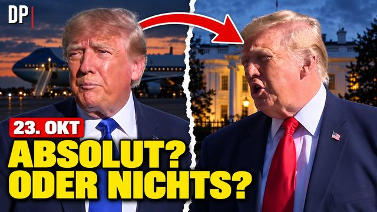
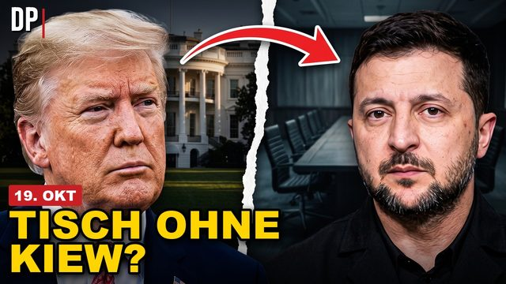

Lange Ausschnitte aus Kongress, Senat und Weißem Haus – im Originalton, auf Deutsch eingeordnet. Was Trump verspricht, was er tut und was das für Deutschland und Europa bedeutet.
Neueste Folgen

25. Oktober 2026
24. Oktober 2026Worum es geht
01
Wir zeigen die Szenen selbst – Anhörungen, Abstimmungen, Pressekonferenzen. Lang genug, um den Zusammenhang zu sehen.
02
Was wurde versprochen, was wurde beschlossen? Wir legen beides nebeneinander – mit Datum und Quelle.
03
Zölle, NATO, Ukraine, Wahlen: Jede Folge fragt, was Washingtons Entscheidungen für Deutschland und Europa heißen.
Unsere Grundsätze
Jedes Zitat ist echt. Jede Zahl hat eine Quelle.